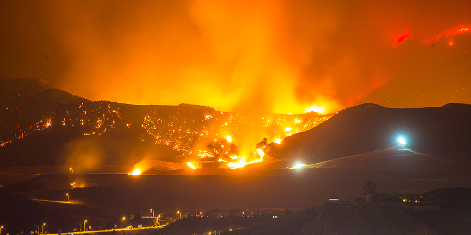

Understanding U.S Wildfire Behavior
MIDS W209 Fall 2022 Final Project
In this project, we hope to enlighten the general public to the behaviors and environmental issues that affect wildfires in the US, specifically focusing on Western “hot spot” states that are more heavily affected. Through the course of our project, we aim to address the following questions:
The data we are using comes from the national Fire Program Analysis (FPA) system, which ran from 1992 to 2015 before being shut down. This dataset contains 1.88 Million Records of United States Wildfires across all 50 states and includes features such as:
* Fire Metadata
* Fire Burn Timestamps
* Fire Centerpoint Geolocations
* Post-fire Reason Coding